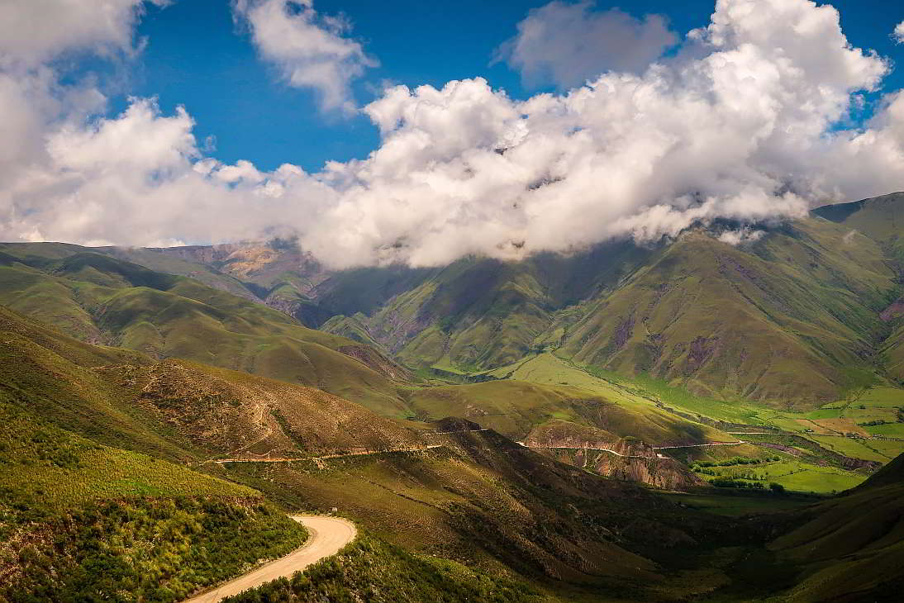
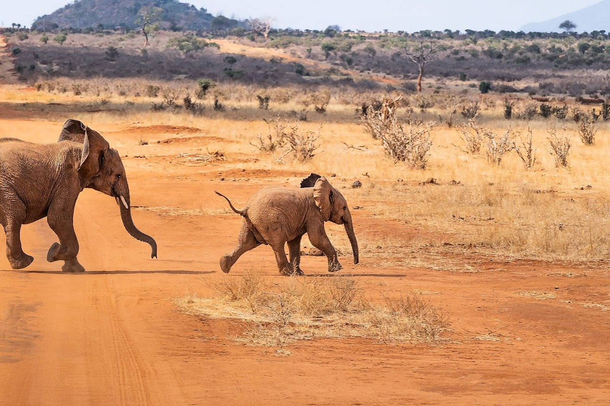
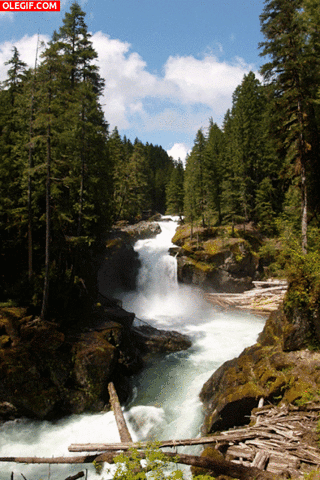

- Bioma Montaña
- Bioma Desierto
- Bioma Bosque
- Formulario de registro
Bioma Montaña
LOCALIZACIÓN:
¿En que piensas cuando escuchas la palabra “alpino”? ¿Montañas o esquiar? Bueno, tienes razón. Los biomas alpinos se encuentran en regiones montañosas alrededor del mundo incluyendo los Andes, Alpes, y las Montañas Rocosas. El bioma alpino se encuentra usualmente a una altitud de alrededor de 10,000 pies, y en el lugar en donde comienza la línea superior de nieve en una montaña. Los biomas alpinos y árticos combinados cubren 16% de la superfice de la Tierra.
CLIMA
Durante el verano, la temperatura promedio varía entre 40 y 60° F. En el invierno las temperaturas caen debajo del punto de congelación. Por lo general, la temperatura es más fría al subir en altitud. Las temperaturas en el bioma alpino son dinámicas, y pueden cambiar de calurosas a extremadamente frías en ún día. La temporada de invierno dura desde Octubre hasta Mayo. El verano puede durar desde Junio a Septiembre. El bioma alpino es bastante seco, y tiene una precipitación anual promedio de 12 pulgadas.
Bioma Desierto
Este bioma esta compuesto por dos tipos de vegetación: Desierto frío y Desierto cálido. Presentan temperaturas promedio que varían entre los 7 y los 11ºC y precipitaciones anuales entre los 130 y 340 mm, dependiendo de la zona. En el Desierto frío las formas de vida dominante son las geófitas y las caméfitas, la cobertura es muy baja y se puede observar solo un estrato. La función es caducifolia y el tipo de hoja es en su mayoría graminiforme de tamaño pequeño. Esta vegetación permanece activa en los meses estivales.
El Desierto cálido presenta en su mayoría caméfitas y terófitas y al igual que el desierto frío la cobertura es muy baja. La vegetación se dispone verticalmente en dos estratos y la función es caducifolia y áfila. El tipo de hoja predominante es la coriácea. Las zonas en donde este tipo de vegetación se encuentra se caracterizan por la erosión hídrica y eólica y las lluvias torrenciales.
Bioma Bosque
Alrededor de un mundo tenemos una gran cantidad de bosques que principalmente son caracterizados por tener una gran cantidad de árboles con una diversidad en especies de flora y fauna que hace de este bioma realmente un espectáculo visual y uno de los más importantes para la Biosfera del planeta. Así que vamos a indagar en el bioma bosque para comprender su importancia ante el planeta tierra. Existen gran variedad de bosques alrededor del mundo, cada uno con sus características particulares y ecosistemas distintos, pero en todos ellos predomina una vegetación abundante que actúa como los pulmones del planeta Tierra. En estos lugares es posible encontrar diferentes organismos con características muy particulares e impresionantes, pero todos tienen en común la habilidad de adaptarse a todos los cambios extremos que allí ocurren. Entre los principales animales que allí se encuentran: osos pardo, jaguares, tigres, ciervos y demas animales salvajes.
Los animales que habitan en los bosques varían según el clima y la altitud de cada tipo de bosque:
| En los bosques templados de coníferas | En los bosques templados de frondosas | En los bosques tropicales | En los bosques boreales |
|---|---|---|---|
| Habitan conejos, coyotes, linces, mapaches, ardillas, búhos, ciervos, castores, puercoespines, murciélagos, palomas, urracas, víboras de cascabel, escorpiones, comadrejas, entre otros. | Habitan osos, cabras, mapaches, ardillas, pumas, venados, ciervos, tigres, murciélagos, pandas, lobos, pájaros carpinteros, águilas reales, ratones, entre otros. | Habitan monos, hormigas, mariposas, águilas, carpinchos, lagartijas, cocodrilos, tucanes, víboras, tigres, murciélagos, jabalíes, ranas, arañas, gorilas, tapires, entre otros. | Habitan osos, ciervos, búhos, ardillas, linces, marmotas, lobos, zorros, entre otros. |
Video relacionado a los bosques y sus caracteristicas:
Temas relacionados
- Ecosistema
- Evolución animal
- Cadena alimenticia
- Bíologia
- Taxonomía
- Aeroterrestre